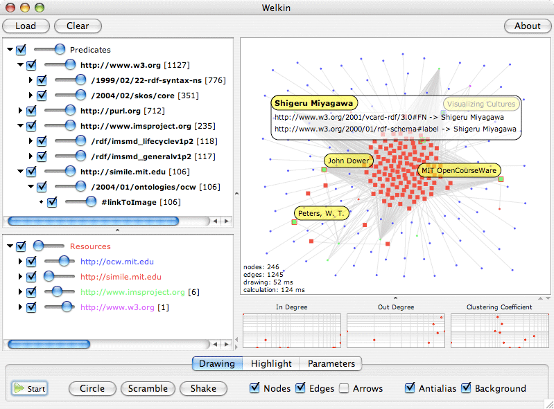

Welkin is a graph-based RDF visualizer.

The easiest way is to run Welkin thru Java WebStart.
If the application doesn't start when you click the link above, you don't have Java WebStart installed in your machine. You can get it when you installed the latest version of the Java Runtime Environment from the official Java web site.
Welkin visualizes RDF models. If you want to test it with some data, you can start with these graph fragments taken from our digital library collection.
A word of warning: above 1000 nodes, real-time drawing performance degrades dramatically even on beefy machines. We suggest you not to load more than 1Mb of RDF; if you have more, consider splitting it up for now. In future versions, we'll be targeting ways to allow you to work on much bigger graphs.
The best way is to read the Welkin User Guide.
You can obtain Welkin in two different ways:
On MacOSX only, you can download Welkin as a prepackaged standalone java application. Download the file with a ".dmg" extension.
In case you want to download the files from the repository (for example, if you want to have the latest and greatest development snapshot), you need to have a Subversion client installed. At this point, just type
svn co http://simile.mit.edu/repository/welkin/trunk/ welkin
at the command line and the latest welkin distribution will appear in the "welkin" directory.
Welkin is open source software and is licensed under the BSD license located in the LICENSE.txt file located in the root of the distribution.
Note however, that this software ships with libraries that are not released under the same license, that we are redistributing them untouched and each of them are licensed according to the terms of the license files located in the ./legal subdirectory of the distribution.
This software was created by the SIMILE project and originally written by: